Fog-wrapped passes, dzongs the colour of dried blood and gold, prayer flags strung across valleys that have never seen a billboard. A kingdom that measures itself in happiness, not GDP.
Bhutan does not rush toward you.
You climb into its fog, and it reveals itself slowly.
These twelve frames follow a route from mountain pass to river valley to golden statue — through mist, over suspension bridges strung with prayer flags, and into dzongs that have stood for centuries. Bhutan remains the only carbon-negative country on Earth, and it feels like it: every frame here is quiet in a way few places still are.
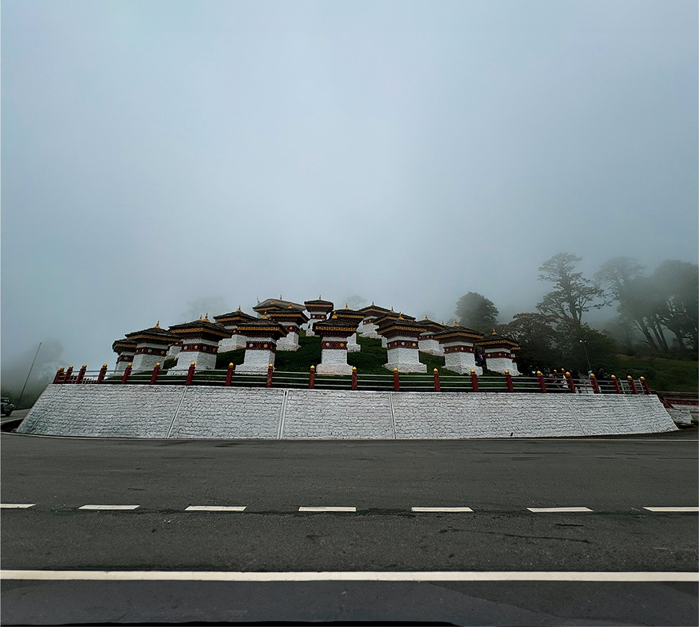
Dochula Pass — 108 chortens rise out of the fog at 3,100 metres.
The road into Bhutan climbs before it arrives anywhere. Dochula Pass is the first threshold — a memorial of 108 chortens built for soldiers who never came home, wrapped in a fog so constant it feels less like weather and more like the country's natural state of being.
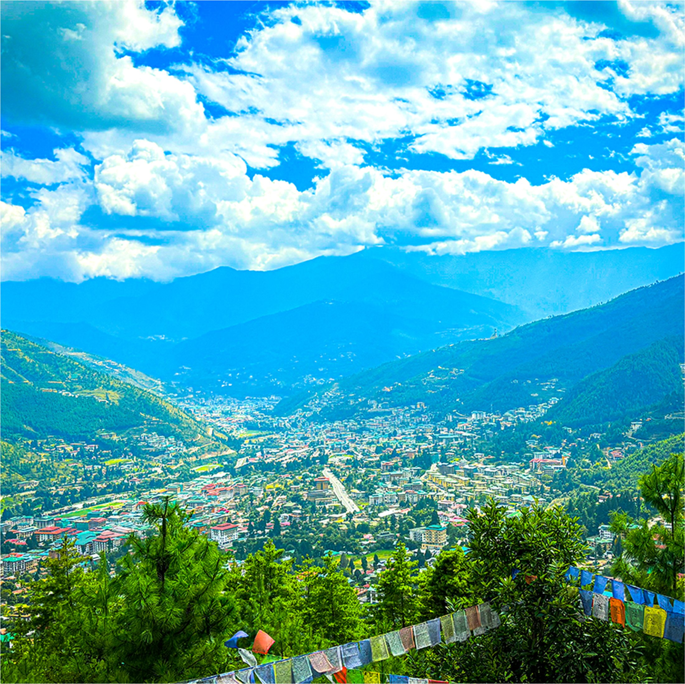
Thimphu valley opens up below — prayer flags framing a capital with no traffic lights.
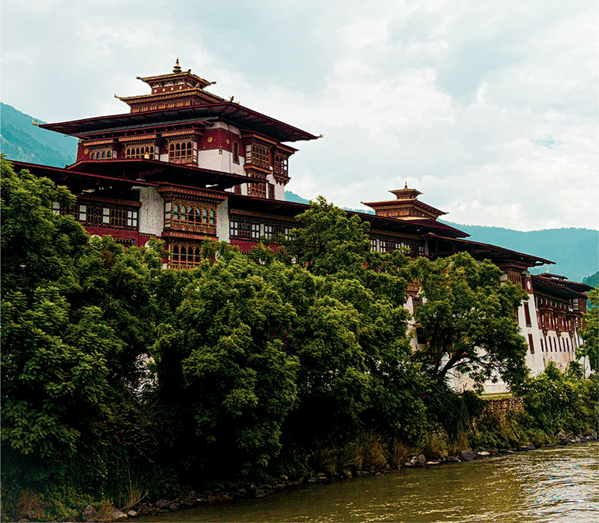
Punakha Dzong at the confluence of two rivers — Bhutan's most beautiful fortress.
Bhutan's dzongs aren't museums — they're working monasteries and district administrative seats, all at once. Monks and civil servants share the same courtyards. The architecture hasn't changed in centuries because there was never a reason to.
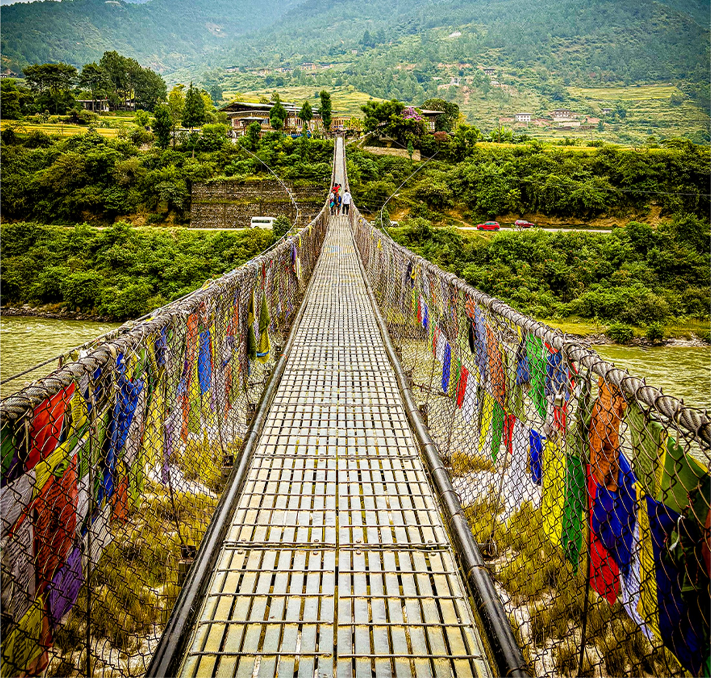
Punakha's suspension bridge — one of the longest in the kingdom, strung end to end with prayer flags.
"We have a vision of development that is not— Jigme Singye Wangchuck, Fourth King of Bhutan
just about growth, but about Gross National Happiness."
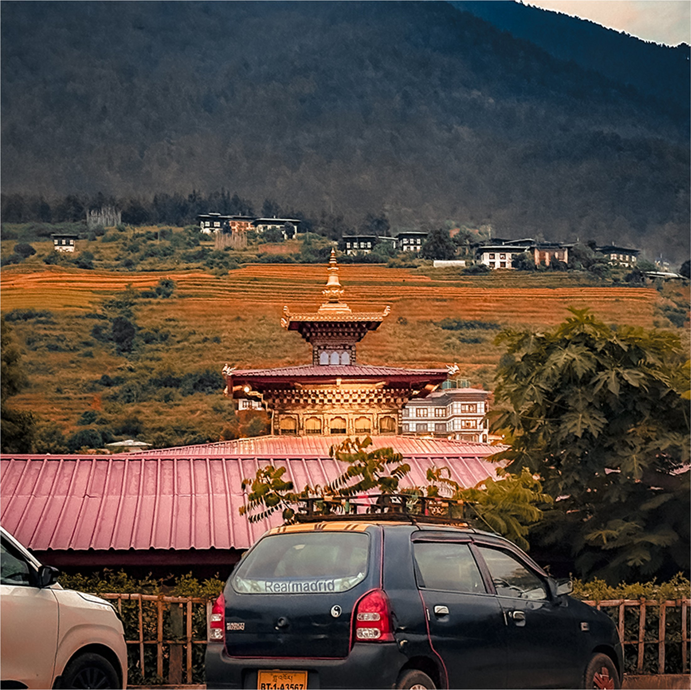
Bhutan's constitution mandates at least 60% forest cover, forever. The result is a country where mist genuinely rolls through inhabited valleys, where a balcony view is unbroken tree line for as far as the eye travels, and where the border between wilderness and daily life barely exists.
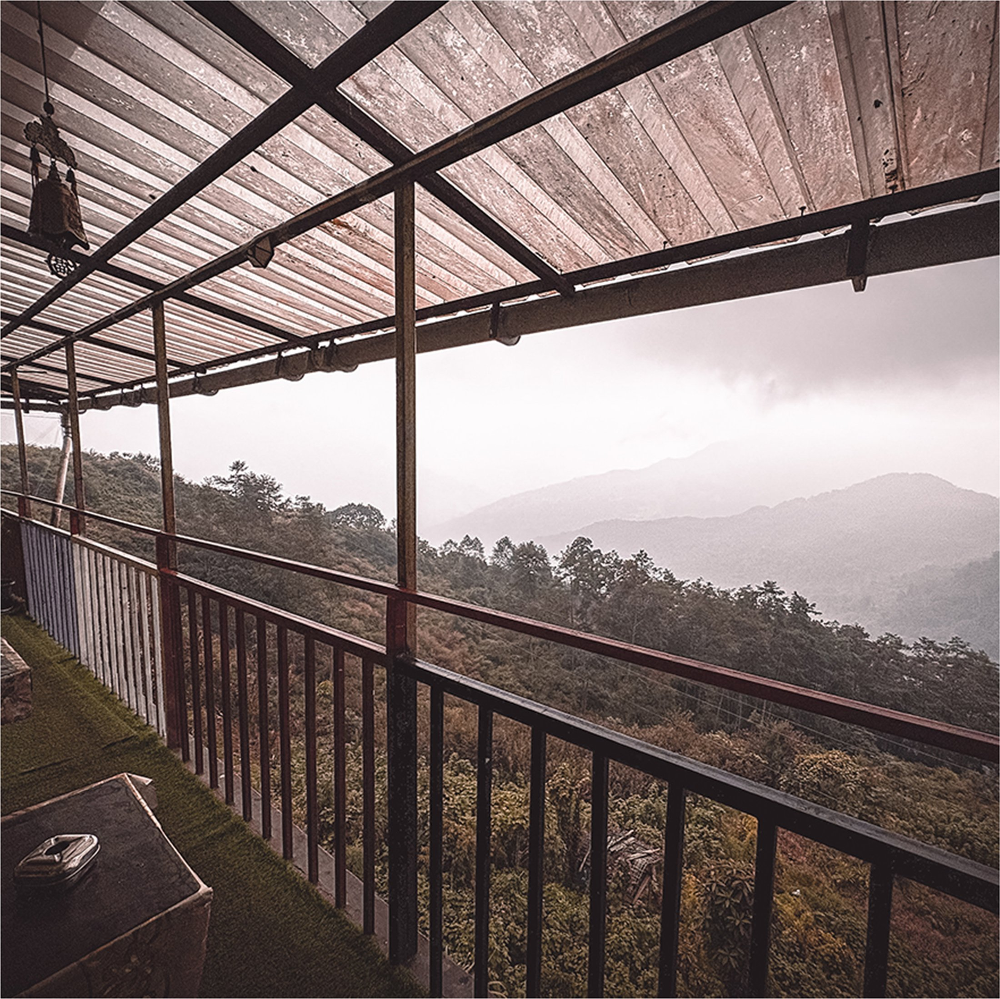
Rain on a tin roof, mist over the ridgeline — the view from a mountain guesthouse.
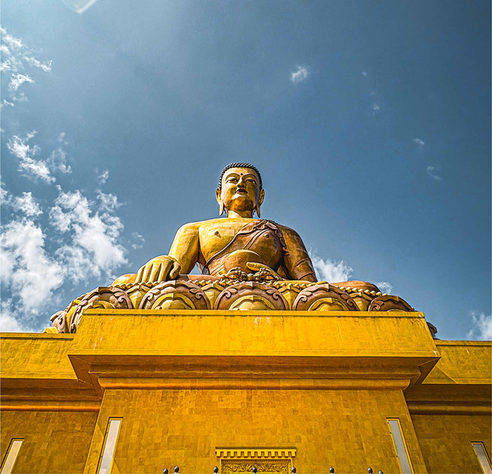
Inside Buddha Dordenma's base sit 125,000 smaller gilded Buddha statues, each one consecrated. From the valley floor in Thimphu, the statue is visible on clear days as a single point of gold against green — a landmark built to outlast the people who built it.
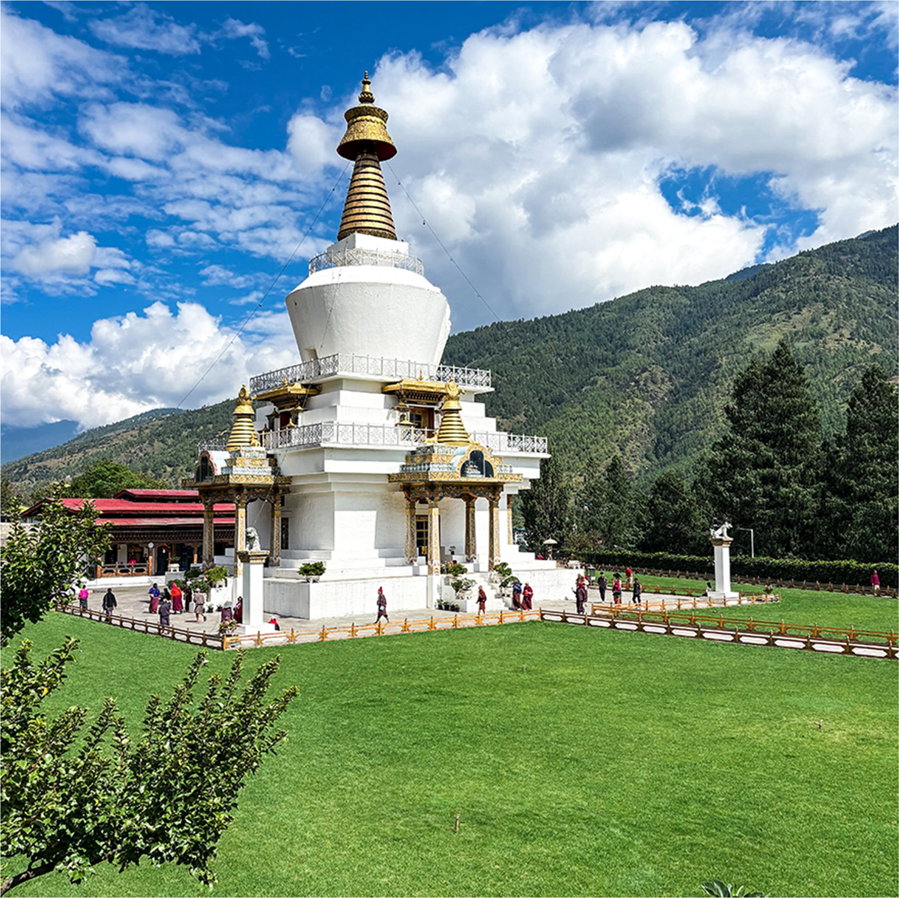
The Memorial Chhorten in full — built for the Third King, circled daily by devotees on foot.
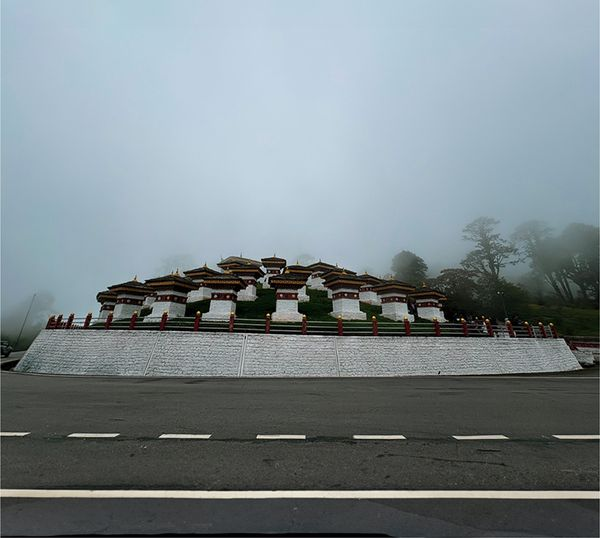
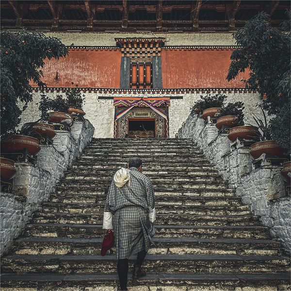
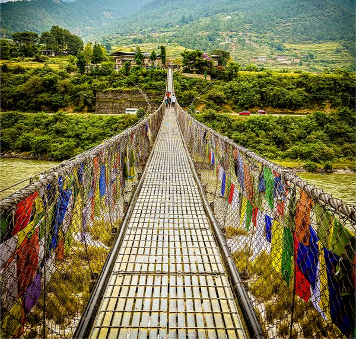
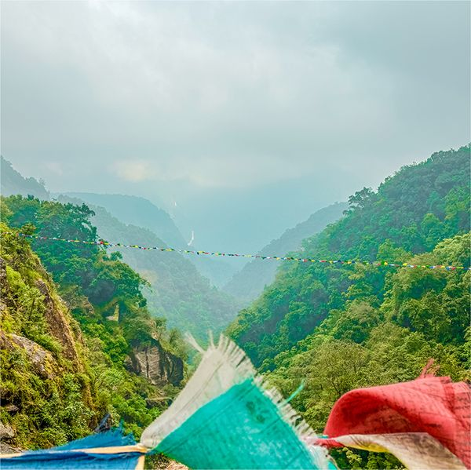
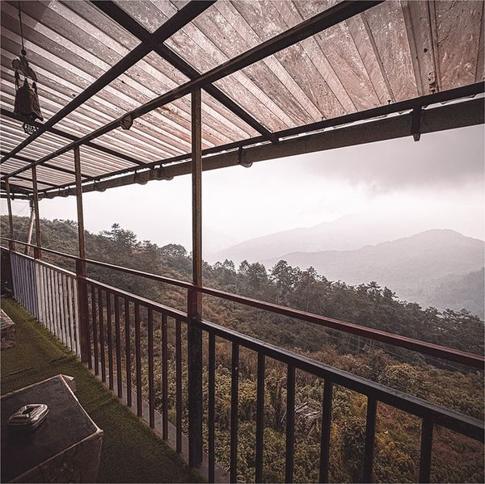
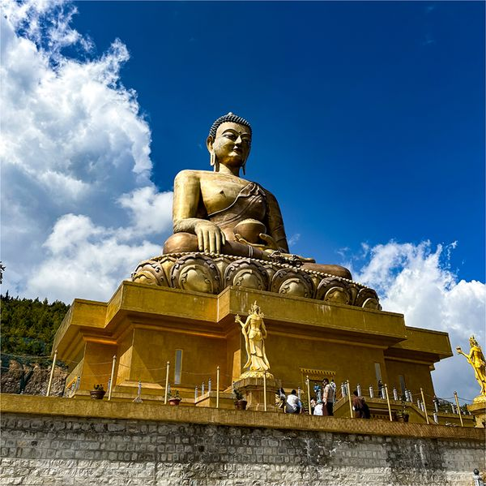
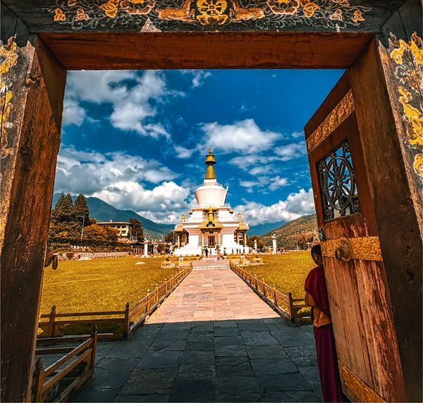